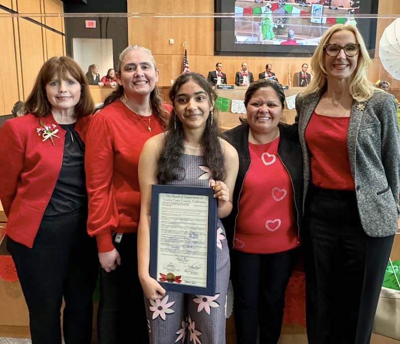

Nitya Varanasi
Student | Interest in Health Sciences
I am a high school student with a strong interest in biology, health sciences, and community service. I enjoy learning through academic coursework, extracurricular activities, and volunteering experiences.
Biology
Health Sciences
Community Service
STEM
Quick Info
| Location | Bay Area, CA |
|---|---|
| School | California High School, San Ramon |
| Academic Interests | Biology, Chemistry, Health-related Sciences |
| Focus Areas | Learning, service, and hands-on experiences |
Contact
Email: contact@nityavaranasi.com
Activities & Experience
| Community Service | Volunteering and service-oriented initiatives. |
|---|---|
| Clubs / Leadership | Participation in school clubs and collaborative activities. |
| Programs / Projects | Science-related programs and academic projects. |
| Skills | Teamwork, communication, curiosity-driven learning. |
Photos
